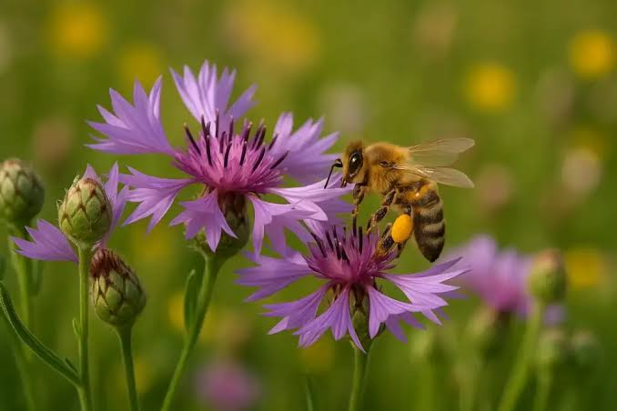
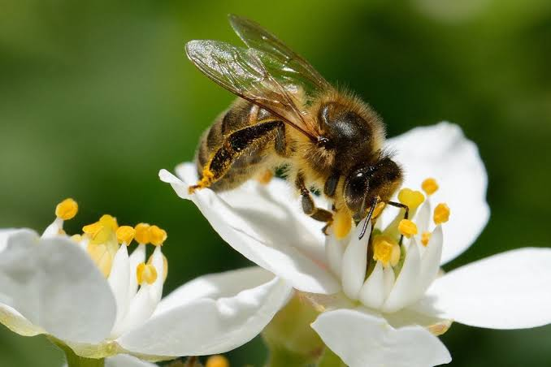
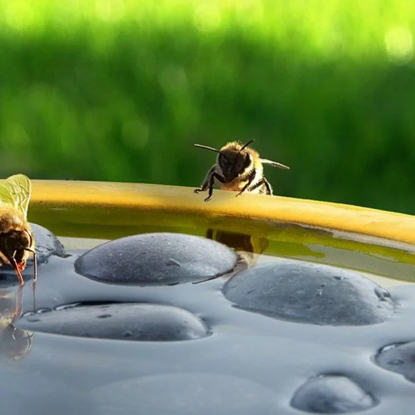
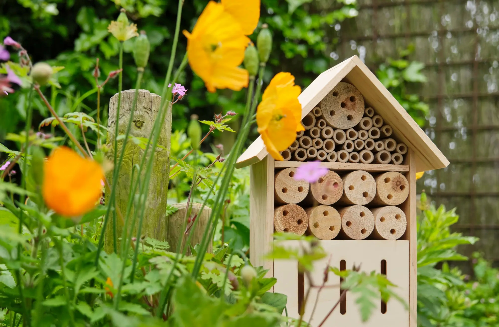

🐝 Małe skrzydła, wielka misja
Ochrona pszczół i dzikich zapylaczy w trosce o przyszłość planety
Ochrona pszczół i dzikich zapylaczy w trosce o przyszłość planety

Owady zapylające odpowiadają za zapylanie blisko 75% gatunków roślin uprawnych na świecie, w tym jabłoni, truskawek, malin, rzepaku i warzyw. Bez ich codziennej pracy bioróżnorodność łąk oraz bezpieczeństwo żywnościowe byłyby poważnie zagrożone.

Dlaczego trzeba je chronić?
Pszczoły miodne i dzikie pszczoły samotnice utrzymują równowagę w przyrodzie. Zapylają dziko rosnące rośliny, które stanowią bazę pokarmową dla ptaków i drobnych ssaków, a jednocześnie zwiększają plony i jakość owoców w sadach.

Jak pomagać na co dzień?
Wystarczy ograniczyć częste koszenie trawnika, zrezygnować z chemicznych oprysków w ogrodzie i wystawić latem płytkie poidełko z wodą oraz kamyczkami, po których owady bezpiecznie się napiją bez ryzyka utonięcia.

Co siać i budować?
Wybieraj gatunki kwitnące od wczesnej wiosny aż do jesieni: krokusy, lawendę, kocimiętkę, szałwię, facelię i wrzosy. Warto też zawiesić w słonecznym miejscu domek dla murarek z nawierconego drewna lub trzciny.
Wybieraj miód z lokalnych, zarejestrowanych pasiek zamiast mieszanek niewiadomego pochodzenia. Zwracaj uwagę na etykietę z numerem weterynaryjnym (WNI) oraz naturalny proces krystalizacji, który świadczy o wysokiej jakości miodu.
Pszczoły dostarczają nie tylko miód, ale również pyłek kwiatowy, pierzgę, propolis (kit pszczeli) oraz wosk. Wspierając etyczne pszczelarstwo, pomagasz utrzymać zdrowe i silne rodziny pszczele w swoim regionie.
Materiały merytoryczne przygotowano w oparciu o opracowania naukowe i instytucjonalne:
Nawet mały balkon w mieście może stać się bezpieczną stołówką dla zapylaczy: